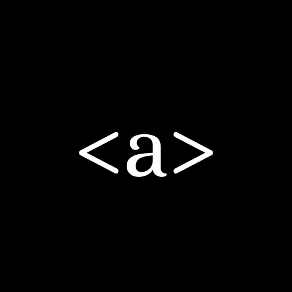
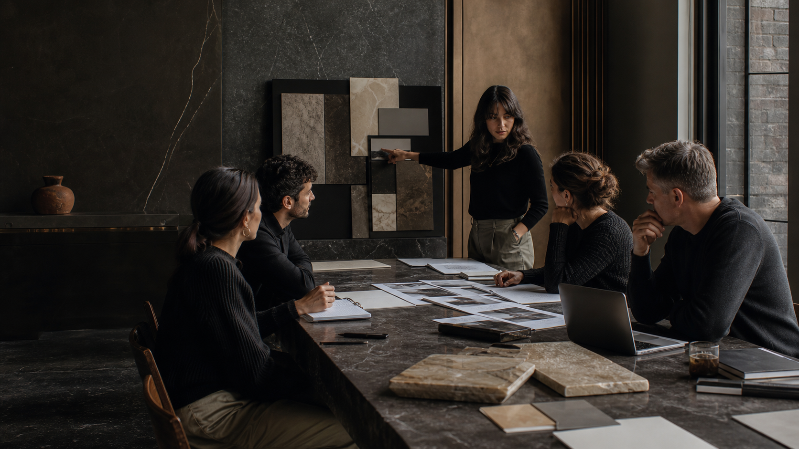

The Anchor Studio · Est. with intention
Studio
A focused digital studio for brands ready to move with clarity, gravity, and measurable intent.
The standard
Design with a point of view.
Build with a business case.
Anchor turns ambitious ideas into considered digital systems: identities that hold their presence, sites that guide action, and launch experiences that earn attention without asking for it.
Explore our capabilities

Studio leadership · 03
Meet Jayla
Jayla brings the detail orientation of a developer to the big-picture discipline of brand building. Her work turns a client’s real advantage into a polished, responsive experience built to perform long after launch day.
View Jayla’s profile
Design direction · 04
Meet Ervin
Ervin shapes the visual language that makes a brand immediately felt. With an eye for hierarchy, rhythm, and human behavior, he creates interfaces that are as easy to use as they are difficult to forget.
View Ervin’s profileThe collective · 05
Specialists, assembled around the work.
Our network combines creative direction, development, content, and growth thinking around one clear objective: make every interaction feel intentional and make every investment work harder.
Meet the wider team
The next chapter · 06
Build something that holds.
Tell Aurelius what is next. It will shape the right starting point, then connect you with the Anchor team.